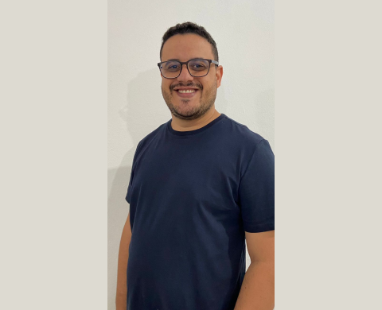

“SOB NOVA DIREÇÃO”
Meu nome é Luiz, e ao longo dos meus 35 anos de vida, pude testemunhar a beleza transformadora da educação por quase duas décadas. Desde cedo, senti a chama da paixão ardendo dentro de mim, me impulsionando a dedicar minha vida a trabalhar com crianças e jovens, com o firme propósito de transformar a sociedade que compartilhamos.
A força desse chamado é tão poderosa que se tornou o alicerce da minha família. Ao lado da minha companheira Ariane, que também é uma educadora de coração, e do meu filho Davi, estamos imersos no universo da educação, respirando seus ensinamentos a cada instante. Nossa casa se tornou um santuário de aprendizado, onde cada momento é uma oportunidade de crescimento e descoberta mútua.
Minha história encontra raízes profundas no amor e no apoio inabalável dos meus pais. Apesar de serem pessoas simples, operários de chão de fábrica, eles nunca hesitaram em investir em meu futuro, acreditando na transformação que a educação poderia trazer. Graças a eles, trilhei um caminho que me levou à universidade federal, algo que parecia distante, mas que eles tornaram possível com sua dedicação.
Minha jornada profissional é uma tapeçaria de experiências diversas. Já fui um simples cobrador de telemensagens, um estagiário ávido por conhecimento, um professor dedicado, um coordenador empenhado e, hoje, me encontro na posição de diretor. Nessa função, sinto que tenho diante de mim uma missão grandiosa: ser uma referência para os incríveis colaboradores da escola e estar presente para apoiá-los em cada passo.
Enquanto ocupo esse papel de liderança, percebo que a escola é o único lugar onde verdadeiramente pertenço. Aqui, com as pessoas ao meu redor, tenho o privilégio de desenvolver projetos que moldam vidas, de ser uma escuta atenta para os anseios e sonhos daqueles que cruzam meu caminho. Sinto-me profundamente ligado ao legado de Marcelino Champagnat, continuando sua missão de educar e evangelizar do jeito de Maria.
Cada dia é uma nova oportunidade para inspirar, para guiar e para fazer a diferença. A educação não é apenas uma profissão para mim; é uma vocação que permeia cada fibra do meu ser. E assim, nessa trajetória de paixão e educação, devo continuar a trilhar o caminho que escolhi. Meu compromisso é ser a força que inspira, o coração que escuta e a presença que transforma.
Enquanto olho para o futuro, vejo um horizonte de possibilidades, onde cada aluno é uma semente pronta para florescer e onde cada colaborador é uma peça essencial no quebra-cabeça da educação. Minha jornada é uma constante evolução, um lembrete de que a educação é mais do que ensino formal; é a arte de nutrir almas e desencadear potenciais.
E assim, com o amor da minha família, o apoio dos meus pais e a chama interior que nunca se apaga, continuarei a trilhar este caminho de paixão e educação, sabendo que, a cada passo que dou, estou ajudando a moldar um futuro mais brilhante para todos nós.
Data da Publicação: setembro de 2023
Por Luiz Fernando Silva